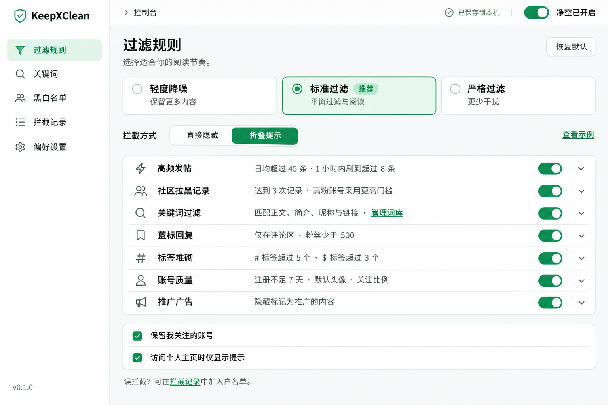
UI DESIGN · LIGHT / V1
让阅读保持清爽。
白色与浅灰承载内容，绿色表达选中和启用。覆盖完整设置、插件弹窗、X 页面内交互，以及加载、离线、校验与恢复状态。
11 张设计稿 · 1536 × 1024
本页是设计稿浏览器。图片中的数据均为示例；产品 UI 已实现，实际运行截图及验证范围见验收截图。品牌以已选定的无保护圈黑钛 X 为准，替换早期图中的占位图标。完整实现方案已整理，点击图片可查看原图。
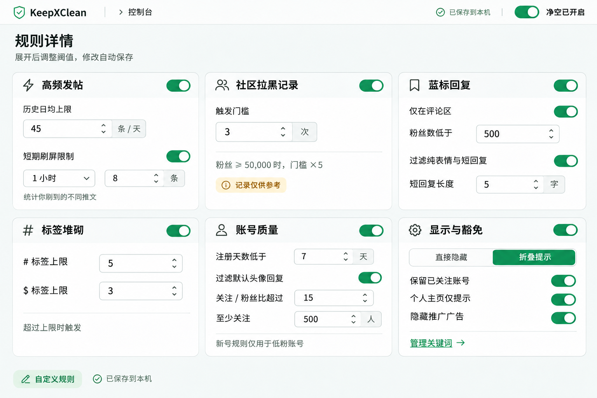
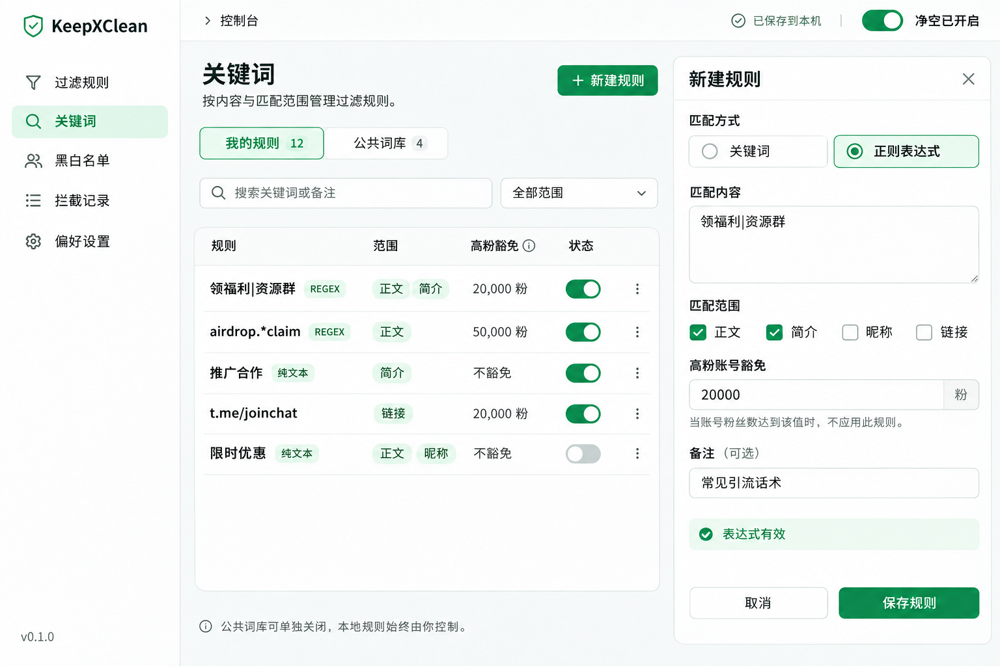
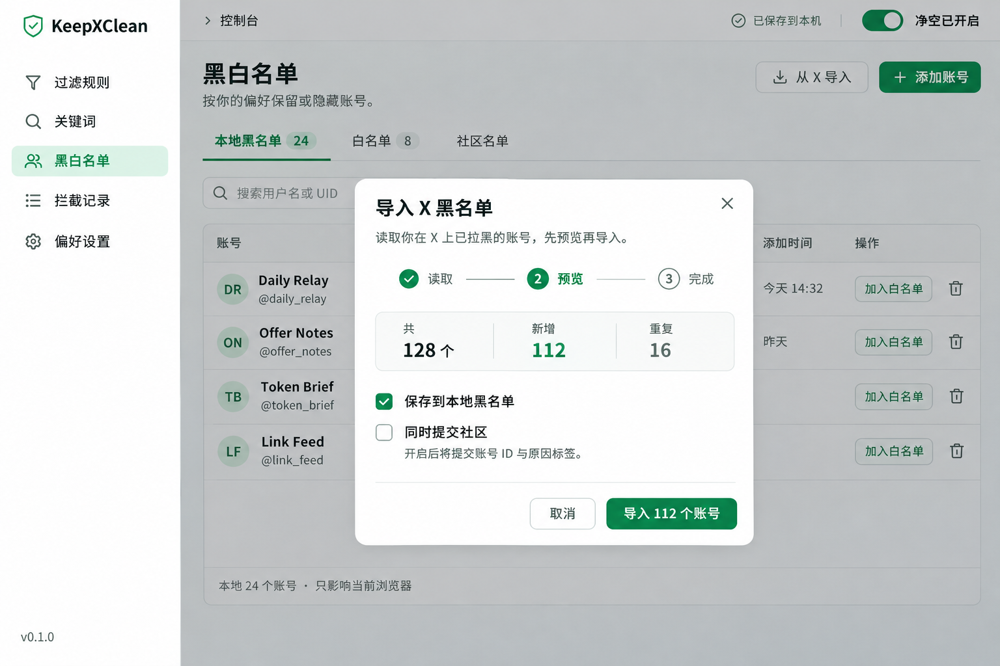
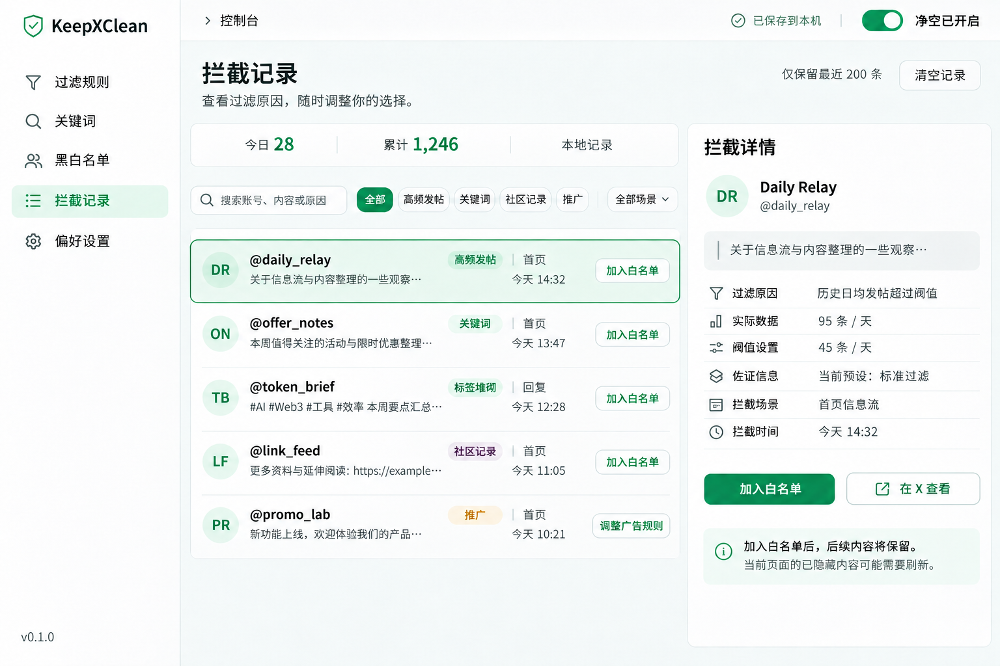
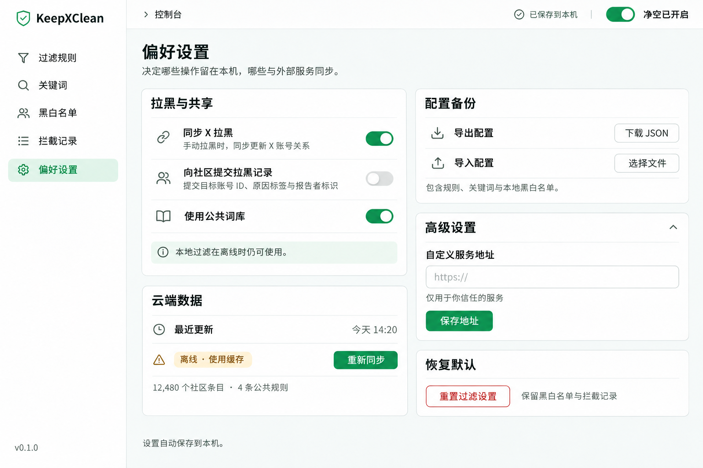
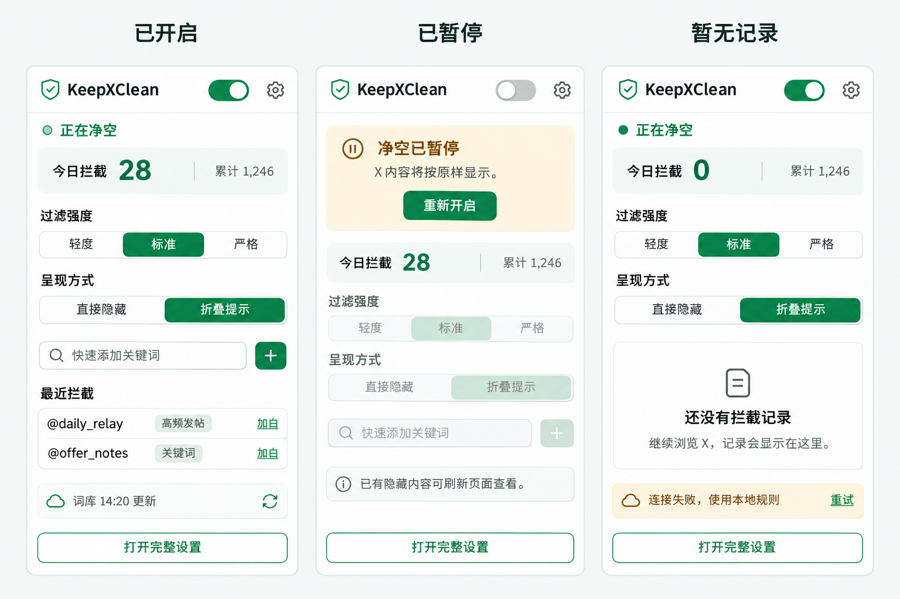
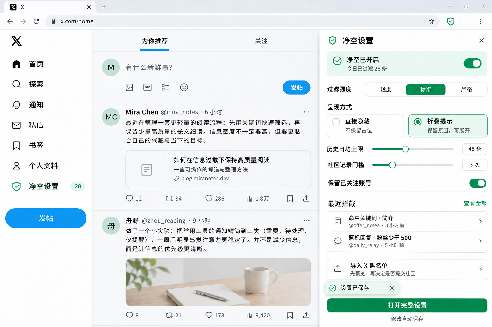
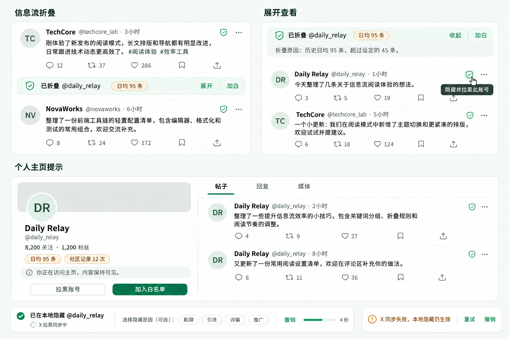
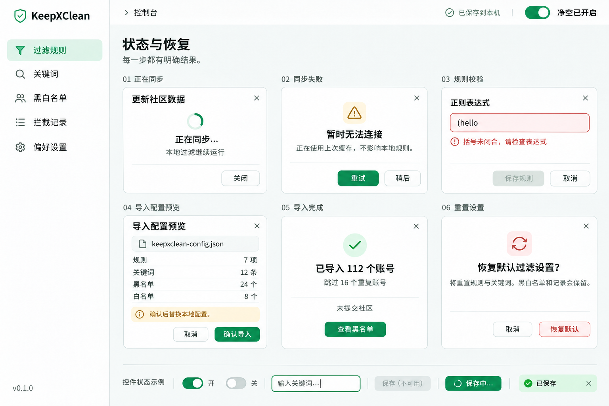
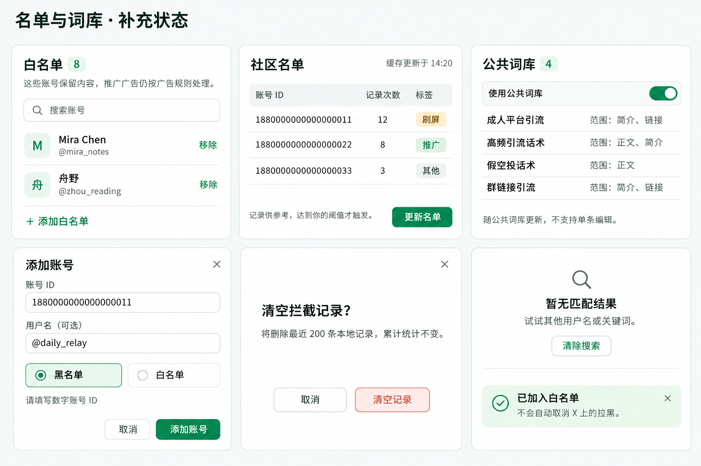
设计与交互说明
浅色视觉是本项目的默认方向。图片负责视觉参考，以下约定负责落地时的行为和尺寸；不将图片直接作为交互界面的背景切图。
页面背景
#F7F9F8内容表面
#FFFFFF主要文字
#172B24主要操作
#13865F提醒背景
#FFF6DF错误背景
#FFF0EE布局与控件
- 字体采用系统中文无衬线；正文 14 px、辅助文字 12 px、章节标题 18 px、页标题 28 px。
- 间距使用 4 / 8 / 12 / 16 / 24 / 32 px；控件圆角 8 px，面板圆角 12 px。
- 设置页侧栏建议 224 px；详情区域在窄视口改为抽屉。页面内抽屉最大宽 440 px。
- 插件弹窗建议宽 400 px、最大高 600 px；内容可滚动，完整设置入口保持可达。
- 表单具备可见焦点、错误提示、禁用和保存中状态；开关同时用位置与文案表达状态。
- X 原生界面保留自身颜色，绿色仅用于 KeepXClean 新增控件。
需要落实的交互约定
- 本地隐藏、X 拉黑与社区上报分别显示结果；没有确认响应时展示进行中或失败。
- 修改拉黑原因只更新同一次操作；撤销窗口内先不提交 X 与社区，撤销恢复操作前的本地状态。外部提交后不自动解除原有 X 拉黑。
- 广告不被白名单豁免，因此广告日志使用“调整广告规则”；加入白名单不自动取消 X 拉黑。
- 导入前预览新增、重复数量及共享选择。导入失败不覆盖现有配置。
- 重置恢复规则参数、呈现方式、场景豁免和自定义关键词总开关；保留关键词条目、总启停、名单、同步偏好、服务地址、记录和统计。
- 画板选中“折叠提示”便于展示交互；不代表修改当前代码默认的“直接隐藏”。
完整交付内容
11 张 PNG 原图、生成与修订提示词、资源索引、浅色设计变量、选定图标及完整实现方案。方案涵盖页面交互、代码拆分、状态与数据契约、P0–P6 实施顺序和验收矩阵；产品代码已完成改造，本地验收通过；真实 X 接口联调仍待完成。